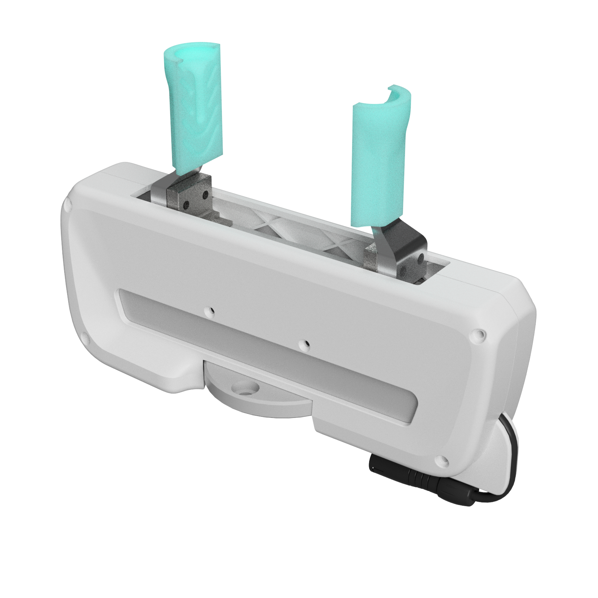
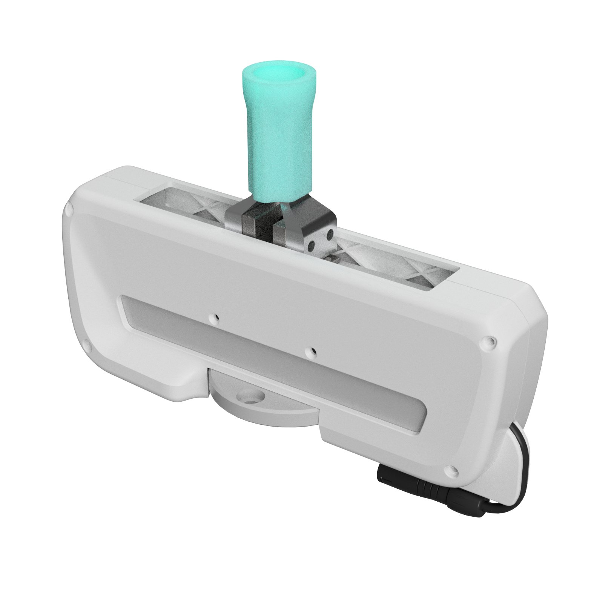
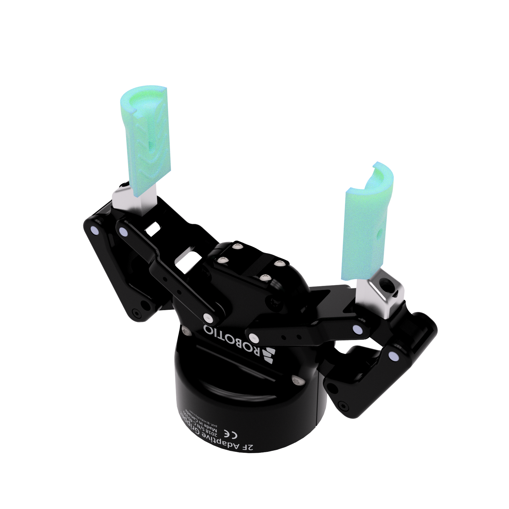
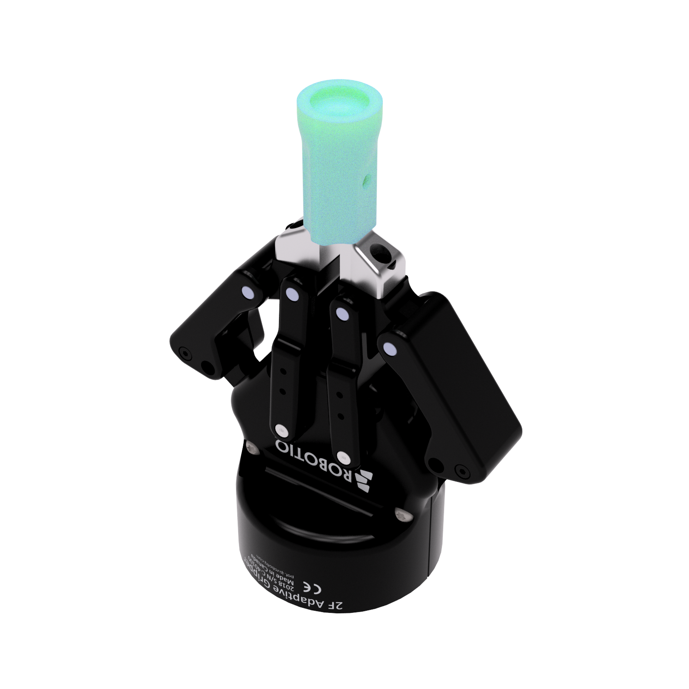

Dual Gripper System
Two Grips, Infinite Possibilities
From Parallel to Dual-Functionality Gripper

Parallel and Suction Grasping


To Make This
We 3D Printed Molds
Casted Silicon
Used Spring-Mass Model
Achieved the Results
For almost any Gripper



